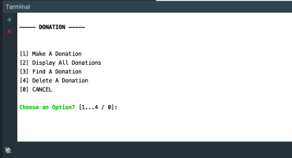
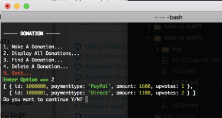
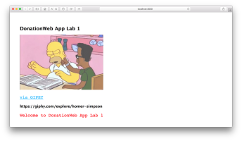
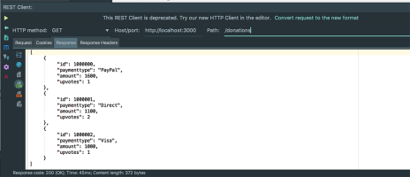
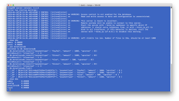
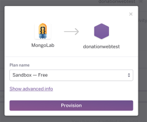
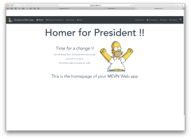
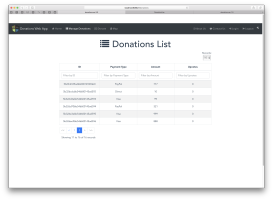
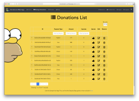

1: Overview
Module Overview
JavaScript Overview
Introdcution to REST
Web Apps Overview
Setup
JS.Lab-01
JS.Lab-02
2: Node.js
Node - Part 1
Node - Part 2
Lab-01
Lab-02
3: Node.js & Mongo
Node - Part 3
Lab-03
Deploy-to-heroku
4: Vue.js 2.0
Overview
Rendering & Reactivity
Components
Routing
Directives
Event Handling
Filters
Computed Data & Watchers
Transitioning Effects
Lab-Vue-01
Lab-Vue-02
Lab-Vue-03
Deploy-to-Firebase
Web App Development 2
All labs's in Module
Setup
JS.Lab-01

JS.Lab-02

Lab-01

Lab-02

Lab-03

Deploy-to-heroku

Lab-Vue-01

Lab-Vue-02

Lab-Vue-03

Deploy-to-Firebase